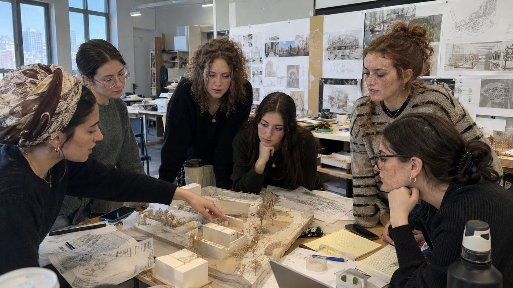
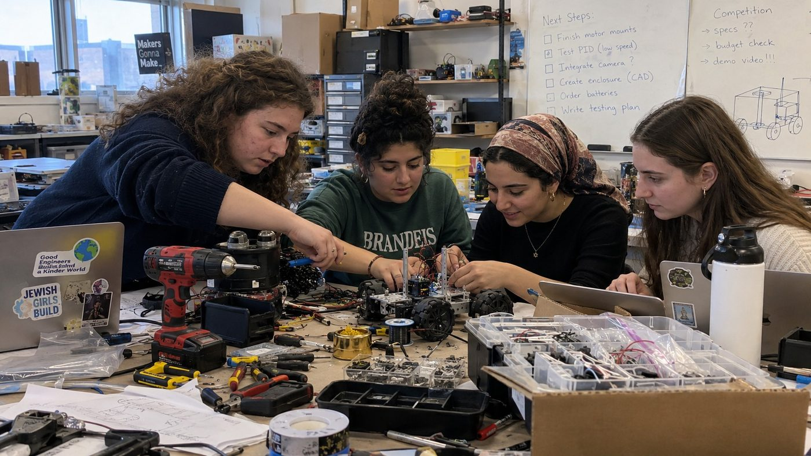

CAREER DISCOVERY · CONCEPT
Inside an architecture studio
See the sketches, models and decisions behind a real building design process.
Example: small-group studio visit
Explore the sample experience ↗Register interestYou deserve more than a career description. Explore proposed hands-on experiences, professional visits, and conversations—and help shape what we build first.
Explore what could be possible. Choose a field, find a sample experience, and tell us where you would like to go next.
Share your interest ↗From architecture studios to science labs, there are many ways to learn what a profession actually feels like. Tell us which doors you'd like us to open.

See the sketches, models and decisions behind a real building design process.

Explore how an idea becomes a working solution—from design to testing.
Learn how medical and scientific teams solve problems, within appropriate privacy and access boundaries.
Ask what really happens behind the scenes: decisions, trade-offs, finance and operations.
Work through a focused design challenge, test a prototype and explain your choices.

Build practical skills while exploring an appropriately scoped educational or community-benefiting project.
Get beyond the title and ask candid questions about education, daily work and career choices.
Tell us whose perspective you want. We can explore whether an appropriate professional introduction is possible.
Tell us what you wish existed. That is useful information in itself.
Experiences are selected for educational value, not just access to impressive names or places.
Share what you want to explore and where you can participate.
Identify suitable professionals, partner organizations, and formats.
Receive clear eligibility, dates, expectations, and available places.
Learn, receive feedback, and identify your next practical step.
We want to hear which fields, roles, and experiences are difficult for you to access. Your requests will help determine what we create.
Tell us what you want“If you could spend one day exploring any profession, where would you go?”